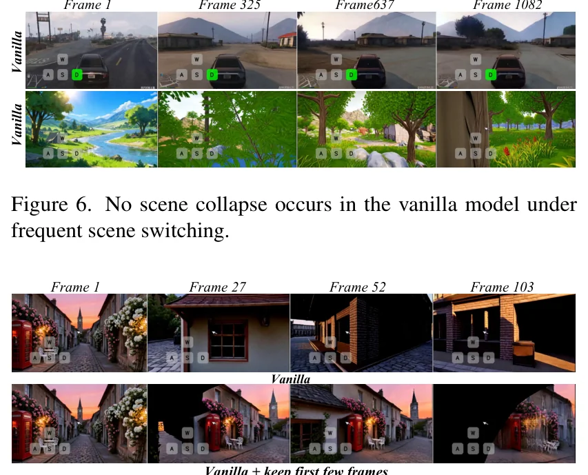
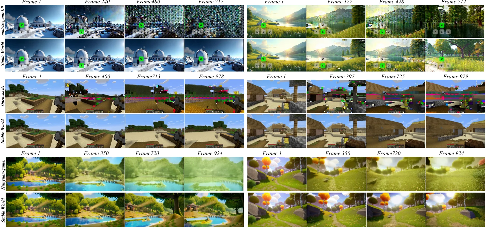
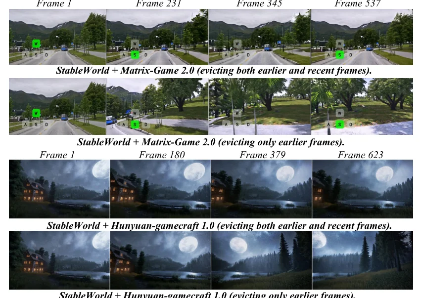
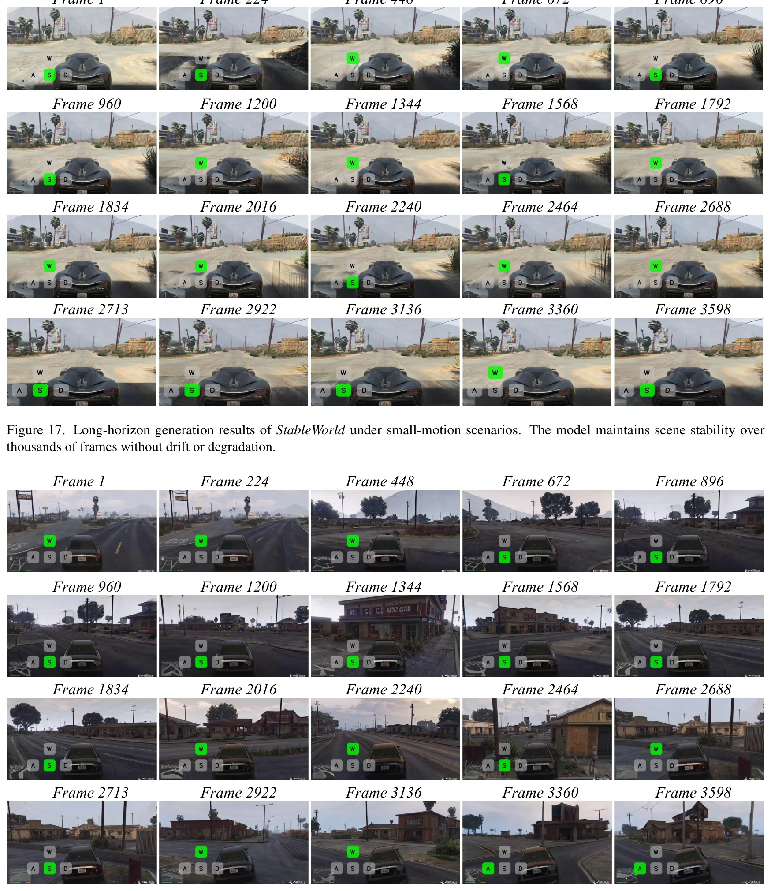
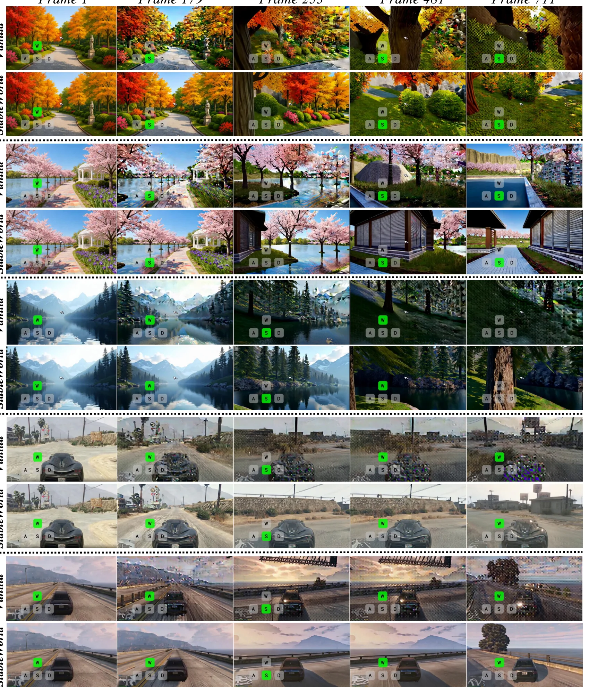

交互视频中的场景坍塌难题
为什么世界模型在长时间交互中会逐渐退化？
随着视频生成技术的飞速发展，世界模型（World Model）已成为理解真实世界交互、预测环境动态的重要范式。然而，一个被长期忽视却极为关键的问题是：交互视频生成中的场景坍塌（Scene Collapse）——随着生成帧数的增加，场景逐渐偏离初始清晰状态，最终演变为视觉上完全不一致的退化输出。
StableWorld 论文首先对这一现象进行了系统性分析。研究者在 Matrix-Game 2.0、Open-Oasis 和 Hunyuan-GameCraft 1.0 三个主流交互视频模型上观察到了一致的渐进式场景坍塌现象。值得注意的是，这种坍塌在静态或缓慢变化的环境中尤为严重，而在频繁场景切换时反而较少出现。

图 1（论文 Figure 6）：在频繁场景切换条件下，原始模型不会出现场景坍塌。这一对比说明坍塌并非源于动作控制或运动复杂度，而是与同一场景内视觉信息的保持和传播方式密切相关。
坍塌的反直觉特性：场景坍塌并非在运动复杂时更严重，反而在场景几乎不变时最为显著。这意味着问题的根源不在于运动估计的精度，而在于同一场景信息在自回归传递过程中的"记忆衰减"——模型在反复看到相似帧时，会逐渐丢失对原始场景的精确表征。
这一发现具有重要的方法论意义：它将研究焦点从"如何更好地跟随动作"转移到了"如何更好地保持场景记忆"。StableWorld 正是基于这一核心洞察，提出了一个简洁而有效的解决方案。
帧间漂移的累积效应分析
微小偏差如何在数十帧内被放大为场景崩溃？
为了理解场景坍塌的机制，研究者从最简单的交互形式——静态交互入手，生成长时静态视频序列并测量帧间均方误差（MSE）距离。结果揭示了一个清晰的模式：虽然相邻帧之间的差异微小，但这些微小漂移随时间逐步累积，导致与初始清晰状态的显著偏差。
图 2（自绘 SVG，基于论文 Figure 3 分析）：不同帧间隔下 MSE 漂移的累积趋势。间隔越大（如对比第 k 帧与第 k+20 帧），漂移越显著。虽然相邻帧间偏差微小，但长期累积最终导致像素空间的可见场景坍塌。
进一步的频域分析揭示了更深层的机制。研究者通过扩大 KV-cache 窗口大小来验证"使用更干净的历史帧可以抑制退化"这一假说。

图 3（论文 Fig. 8）：频域幅度差异分析。随着窗口大小从 9 增加到 36、90，目标帧与首帧之间的频率波动逐渐减小，表明保留更早的干净帧可以有效抑制误差累积。
窗口大小的边际递减效应：将窗口从 9 扩大到 90 确实能抑制频域波动，但计算开销随窗口大小线性增长。论文发现，真正起作用的不是窗口的绝对大小，而是窗口中是否保留了若干干净的早期帧——在固定窗口中保留前 3 帧即可获得与大窗口相近的稳定性，这一发现为后续的驱逐机制设计提供了直接动机。
频率域视角的启示：在频域中，场景坍塌表现为高频分量的逐渐失真——初始帧的纹理细节在反复自回归传递中被"平滑化"。这意味着即使像素空间的 MSE 看起来很小，频域中的高频信息已经在悄然退化。频域分析为检测"隐性漂移"提供了一种比像素 MSE 更敏感的工具。
关键数学表达：交互视频生成过程
核心方法：动态帧驱逐机制
如何在保持运动连续性的同时阻止误差累积？
基于上述分析，StableWorld 提出了一个优雅的解决方案：动态帧驱逐机制（Dynamic Frame Eviction Mechanism）。核心思想是：在滑动窗口更新时，不再简单地丢弃最老的帧，而是通过几何一致性检测来智能选择哪些帧应该被保留、哪些应该被驱逐。
图 4（自绘 SVG）：StableWorld 动态帧驱逐机制的完整流程。上半部分对比了原始方法与 StableWorld 的窗口管理策略；下半部分展示了驱逐决策的四步流程。
具体来说，当窗口需要滑动时，StableWorld 将窗口中的帧分为三类：
1. 参考帧（Reference Frame）\(\mathbf{P}_0\)：窗口中最早、退化最少的帧，作为几何一致性检测的基准。
2. 中间帧（Middle Frames）\(\mathbf{P}_1, \ldots, \mathbf{P}_K\)：介于参考帧和最近帧之间的帧，是驱逐的候选对象。
3. 近期帧（Recent Frames）：窗口末尾的若干帧，始终保留以维持运动连续性和视觉平滑度。
"保留最老"与"保留最新"的辩证关系：论文的精妙之处在于同时保留了两类帧——最早的参考帧提供全局一致性锚点，最新的帧提供局部运动连续性。中间的帧则成为"缓冲区"，其驱逐决策取决于几何一致性。这种设计同时解决了"误差累积"和"场景切换灵活性"两个看似矛盾的目标。
滑动窗口 vs. 固定缓冲区：相比简单地扩大 KV-cache 窗口来保留更多历史帧（计算开销大），StableWorld 的驱逐策略在固定窗口大小下实现了更优的稳定性-效率权衡。关键区别在于：大窗口保留了所有信息（包括已退化的帧），而驱逐策略只保留"有价值"的帧——干净的参考帧和最近的运动帧。
ORB + RANSAC：几何一致性度量
为什么 ORB 优于 SSIM 和余弦相似度？
驱逐决策的核心在于如何衡量两帧之间的"几何一致性"。StableWorld 采用了经典的 ORB（Oriented FAST and Rotated BRIEF） 特征匹配结合 RANSAC 几何验证方案。这一选择并非随意——论文通过消融实验证明了 ORB 在此场景下的独特优势。
ORB 几何一致性计算的完整数学推导
图 5（自绘 SVG）：三种相似度度量的定性对比。ORB+RANSAC 在旋转不变性、几何变换敏感度和噪声鲁棒性之间取得了最佳平衡。
论文的消融实验（Figure 10）提供了定量证据：对于一组包含渐进视角变化的测试图像，SSIM 从 1.00 骤降至 0.08（过于敏感），余弦相似度仅从 1.00 降至 0.84（不够敏感），而 ORB 从 1.00 降至 0.32，提供了合理的区分度。
ORB 的旋转不变性是关键优势：交互视频中相机的旋转和平移是常见操作。SSIM 基于像素亮度的统计比较，对相机旋转极度敏感——轻微的旋转变换就会导致 SSIM 急剧下降，从而错误地驱逐干净帧。ORB 描述子本身具有旋转不变性，能更好地区分"同一场景的不同视角"和"真正不同的场景"。
双模型几何验证的互补性：同时使用 Homography 和 Fundamental 矩阵是一种被低估的设计选择。Homography 假设场景为平面（适用于墙壁、地面等），Fundamental 矩阵适用于一般三维场景。取两者的最大内点比率，确保了在不同几何结构下的鲁棒性——这一细节虽然微小，但在复杂交互场景中至关重要。
import cv2
import numpy as np
def orb_geometric_similarity(frame_ref, frame_target,
ratio_thresh=0.75, ransac_thresh=3.0):
"""
基于 ORB + RANSAC 的帧间几何一致性检测。
参数:
frame_ref: 参考帧 P0 (BGR)
frame_target: 目标帧 Pk (BGR)
ratio_thresh: Lowe 比率测试阈值
ransac_thresh: RANSAC Sampson 误差容差
返回:
similarity: 几何一致性得分 s(P0, Pk) in [0, 1]
"""
# Step 1: ORB 特征提取
orb = cv2.ORB_create(nfeatures=1000)
kp1, des1 = orb.detectAndCompute(frame_ref, None)
kp2, des2 = orb.detectAndCompute(frame_target, None)
if des1 is None or des2 is None:
return 0.0
# Step 2: 最近邻匹配 + Lowe 比率测试
bf = cv2.BFMatcher(cv2.NORM_HAMMING)
raw_matches = bf.knnMatch(des1, des2, k=2)
good_matches = []
for m, n in raw_matches:
if m.distance < ratio_thresh * n.distance:
good_matches.append(m)
g = len(good_matches)
if g < 4: # RANSAC 最少需要 4 个对应点
return 0.0
pts1 = np.float32([kp1[m.queryIdx].pt for m in good_matches])
pts2 = np.float32([kp2[m.trainIdx].pt for m in good_matches])
# Step 3: RANSAC 几何验证 (Homography + Fundamental)
# Homography model
H, mask_H = cv2.findHomography(pts1, pts2, cv2.RANSAC, ransac_thresh)
r_H = np.sum(mask_H) / g if mask_H is not None else 0.0
# Fundamental matrix model
F, mask_F = cv2.findFundamentalMat(pts1, pts2, cv2.RANSAC,
ransac_thresh, confidence=0.99)
r_F = np.sum(mask_F) / g if mask_F is not None else 0.0
# Step 4: 最终相似度 s(P0, Pk) = max(r_H, r_F)
similarity = max(r_H, r_F)
return similarity阈值 0.75 的经验合理性：论文测试了 0.35、0.55、0.75、0.95 四个阈值。过低的阈值（0.35）导致旧帧保留过久，干扰新场景生成；过高的阈值（0.95）导致干净帧被过早驱逐。0.75 在"保持稳定性"和"允许场景切换"之间取得了最佳平衡——这一经验阈值本质上编码了"两个场景至少有 75% 的几何重叠才视为同一场景"的先验假设。
实验结果：全面的定量与定性评估
StableWorld 在多个维度上带来了怎样的提升？
StableWorld 的实验评估覆盖了 VBench-Long 基准的多个维度和大规模 用户研究，结果一致表明该方法在视觉质量、时间一致性和运动平滑度上均取得了显著提升。
图 6（论文 Table 2）：用户研究结果。20 位参与者在 30 个视频上评估三个模型的视频质量、时间一致性和运动平滑度。StableWorld 在所有模型和所有维度上获得了绝大多数投票。
| 方法 | 延迟 | 图像质量 ↑ | 美学质量 ↑ | 动态度 ↑ | 时间闪烁 ↓ | 运动平滑 ↑ | 主体一致性 ↑ | 背景一致性 ↑ |
|---|---|---|---|---|---|---|---|---|
| Matrix-Game 2.0 | ×1.00 | 63.39 | 38.83 | 56.19 | 95.19 | 97.41 | 96.49 | 97.52 |
| + StableWorld | ×1.01 | 73.52 | 53.44 | 56.66 | 95.96 | 98.13 | 97.02 | 97.74 |
| Open-Oasis | ×1.00 | 66.37 | 43.80 | 16.81 | 99.53 | 99.52 | 98.94 | 99.18 |
| + StableWorld | ×1.02 | 73.75 | 48.73 | 20.04 | 99.67 | 99.62 | 98.84 | 99.52 |
| Hunyuan-GameCraft | ×1.00 | 57.91 | 48.38 | 98.00 | 95.66 | 98.27 | 97.21 | 96.83 |
| + StableWorld | ×1.02 | 65.91 | 57.44 | 98.66 | 96.05 | 98.29 | 97.08 | 97.06 |
图 7（论文 Figure 8）：三个模型上原始版本与 StableWorld 版本的定性对比。StableWorld 版本在长时间生成后保持了更高的场景稳定性和更平滑的运动过渡。
时间质量指标的"反常"现象：论文坦率地指出了一个反直觉现象：StableWorld 在时间闪烁和运动平滑度上的提升幅度不大。原因是当原始模型发生场景坍塌后，生成的帧几乎静止不动——这反而"稳定"了时间质量指标。这提醒我们，现有评估指标在极端退化场景下可能产生误导，需要设计更鲁棒的评估方法。
近乎为零的计算开销是工程价值的关键：ORB 特征提取和 RANSAC 验证都是在像素空间的轻量操作，相比扩散模型的前向推理可以忽略不计。1-2% 的开销意味着 StableWorld 几乎是"免费"的改进——这种低侵入性使其在实际部署中极具吸引力。
消融研究：窗口大小、度量与阈值
每个设计选择背后的权衡与洞察
论文通过三组消融实验系统验证了 StableWorld 各组件的有效性，每组实验都揭示了有趣的设计权衡。
6.1 窗口大小的影响

图 8（论文 Figure 13）：不同窗口大小下的 StableWorld 表现。窗口大小为 9（默认）表现最佳；窗口增大到 18 或 36 时，过多的历史帧引入了旧场景的残余伪影，干扰新场景的生成。
窗口大小的"甜蜜点"效应：更大的窗口不一定更好——窗口=36 时旧场景残余信息干扰新场景生成的现象尤为明显。这说明在驱逐机制中，"信息量"与"信息质量"之间存在张力：保留更多帧增加了信息量，但也引入了更多已退化的帧。StableWorld 的驱逐策略本质上是在做"信息质量过滤"。
6.2 相似度度量对比
图 9（论文 Figure 7）：不同相似度度量下的 StableWorld 表现。基于余弦相似度的版本偶尔遗漏场景切换；基于 SSIM 的版本过早驱逐干净帧导致更严重的累积误差。
6.3 阈值敏感性分析
图 10（自绘 SVG，基于论文 Figure 12 分析）：不同 ORB 相似度阈值的效果对比。0.75 在"防止误差累积"和"允许场景灵活性"之间实现了最优权衡。
import numpy as np
from typing import List, Tuple
class StableWorldEvictor:
"""
StableWorld 动态帧驱逐机制实现。
在滑动窗口中智能选择驱逐帧，抑制累积误差。
"""
def __init__(self, window_size: int = 9,
num_earlier: int = 6,
similarity_threshold: float = 0.75):
self.window_size = window_size
self.num_earlier = num_earlier # 早期帧数量
self.threshold = similarity_threshold
self.frame_buffer: List[np.ndarray] = []
def add_frame(self, new_frame: np.ndarray) -> List[np.ndarray]:
"""添加新帧并执行驱逐策略，返回更新后的缓冲区。"""
self.frame_buffer.append(new_frame)
if len(self.frame_buffer) <= self.window_size:
return self.frame_buffer # 窗口未满，无需驱逐
# 执行驱逐决策
evict_idx = self._select_eviction_target()
if evict_idx is not None:
self.frame_buffer.pop(evict_idx)
return self.frame_buffer
def _select_eviction_target(self) -> int:
"""选择应该被驱逐的帧索引。"""
n = len(self.frame_buffer)
if n <= self.window_size:
return None
# 参考帧: 最早的帧 P0
ref_frame = self.frame_buffer[0]
# 中间帧: P1 到 P_{K} (K = num_earlier - 1)
K = min(self.num_earlier - 1, n - 2)
# 逐帧检查几何一致性
last_similar_idx = 0
for k in range(1, K + 1):
similarity = orb_geometric_similarity(
ref_frame, self.frame_buffer[k]
)
if similarity >= self.threshold:
last_similar_idx = k
else:
break # 首次不满足则停止检查
# 驱逐策略：
# - 如果所有中间帧都满足阈值，驱逐最远的中间帧
# - 否则驱逐最后一个满足阈值的帧的前一帧
if last_similar_idx == K:
return K # 驱逐最远的中间帧
else:
return max(last_similar_idx, 1) # 驱逐漂移帧阈值选择的空间一致性：值得注意的是，论文在所有三个模型上使用了相同的阈值 0.75，这表明 ORB 几何一致性得分具有跨模型的可迁移性。这种一致性源于 ORB 特征描述的是底层几何结构而非模型特定的视觉风格，为方法的通用性提供了理论基础。
跨模型泛化：即插即用的稳定性保障
同一机制如何适配三种截然不同的世界模型？
StableWorld 最引人注目的特性之一是其 模型无关性（Model-Agnostic）。论文在三个架构差异显著的世界模型上验证了方法的有效性，且每个模型的适配仅需调整少量超参数。
图 10（自绘 SVG）：StableWorld 的跨模型适配架构。同一套 ORB+RANSAC 检测机制通过调整窗口配置和帧检查策略，即可适配三种架构差异显著的世界模型，且共享相同的相似度阈值 0.75。

图 11（论文 Figure 17）：长时域交互下的场景稳定性对比。StableWorld 在超过 700 帧的生成中保持了清晰的场景结构，而原始模型已出现严重的视觉退化。
图 12（论文 Figure 18）：另一组长时域对比，展示了 StableWorld 在不同场景和动作条件下的稳定性优势。
"""
StableWorld 跨模型配置适配。
展示了如何用最小的配置调整将方法应用于不同世界模型。
"""
# ============================================================
# Matrix-Game 2.0 配置
# - 每步生成 3 帧，KV-cache 长度 9
# - 检查第 3 帧和第 6 帧的 ORB 相似度
# ============================================================
MATRIX_GAME_CONFIG = {
"window_size": 9,
"frames_per_step": 3,
"earlier_frames": 6, # 前 6 帧作为"早期帧"
"check_indices": [2, 5], # 检查第 3、6 帧 (0-indexed)
"similarity_threshold": 0.75,
}
# ============================================================
# Open-Oasis 配置
# - 每步生成 1 帧，默认窗口大小 16
# - 检查第 1、6、12 帧
# ============================================================
OPEN_OASIS_CONFIG = {
"window_size": 16,
"frames_per_step": 1,
"earlier_frames": 12, # 前 12 帧作为"早期帧"
"check_indices": [0, 5, 11],
"similarity_threshold": 0.75,
}
# ============================================================
# Hunyuan-GameCraft 1.0 配置
# - 每步生成 33 帧（chunk），窗口由新帧组成
# - 比较前一窗口的第 1、6、12 帧与新窗口的对应帧
# ============================================================
HUNYUAN_GAMECRAFT_CONFIG = {
"chunk_size": 33,
"check_indices": [0, 5, 11],
"merge_threshold": 0.75, # 相似度高于阈值则合并旧帧
"similarity_threshold": 0.75,
}
# 关键发现：所有模型使用相同阈值 0.75
# 这表明 ORB 几何一致性具有跨模型的可迁移性
print("所有模型共享的阈值:", MATRIX_GAME_CONFIG["similarity_threshold"])
print("额外计算开销: 1.00-1.02x (几乎为零)")不同架构的适配策略差异：Matrix-Game 2.0 采用标准滑动窗口驱逐；Open-Oasis 逐帧生成所以检查更密集的帧位置；Hunyuan-GameCraft 以 33 帧为一个 chunk 生成，需要跨 chunk 的帧合并策略。三种适配策略的核心都是 ORB 一致性检测，但触发时机和帧选择策略因模型生成节奏而异——这种"检测机制不变、调度策略灵活"的设计是即插即用的关键。
自回归视频生成的通用退化模式：三个模型虽然架构不同（有的基于扩散、有的基于自回归、有的混合架构），但都表现出相同的场景坍塌模式。这暗示了一个更深层的规律：只要生成过程依赖历史帧的有限子集作为条件，误差累积就是不可避免的。StableWorld 本质上是在信息传递层面做了一次"质量控制"。
论文还将 StableWorld 应用于 Self-Forcing 框架下的自回归视频生成，进一步验证了方法在训练-推理对齐场景中的有效性。这一扩展表明，动态帧驱逐不仅可以作为推理时的后处理技术，也可以作为训练过程中的正则化策略。
总结与前瞻
从诊断到治疗，StableWorld 的贡献与启示
StableWorld 论文的贡献可以概括为三个层面：
诊断层面：系统揭示了交互视频生成中场景坍塌的根源——同一场景内微小帧间漂移的逐步累积。这一发现将研究焦点从"动作跟随精度"转移到了"场景记忆保持"。
方法层面：提出了简洁而有效的动态帧驱逐机制，通过 ORB+RANSAC 几何一致性检测智能选择保留帧，在固定窗口大小下实现了优于大窗口的稳定性表现，且计算开销近乎为零。
验证层面：在三个主流世界模型（Matrix-Game 2.0、Open-Oasis、Hunyuan-GameCraft 1.0）上验证了方法的通用性，实现了视觉质量最高 14.6% 的提升和用户研究中 76.8%-96.4% 的偏好率。

图 13（论文 Figure 16）：更多场景下的定性对比，展示了 StableWorld 在不同环境（自然场景、游戏世界等）中的稳定性和视觉质量优势。
"简单方法"的深刻启示：StableWorld 使用的是 ORB+RANSAC 这种 2011 年就提出的技术，没有引入任何可学习参数或额外训练，却取得了显著效果。这提醒我们，在追求复杂架构创新的同时，不应忽视经典计算机视觉技术在特定问题上的独特价值。有时候，正确的"诊断"比复杂的"处方"更重要。
未来方向：从被动驱逐到主动预防：StableWorld 的驱逐策略是在推理阶段被动地过滤退化帧。一个自然的延伸方向是将这一思想融入训练过程——例如在训练时模拟帧退化模式并训练模型主动补偿，或者在架构层面引入显式的"场景记忆"模块。这可能从根本上解决误差累积问题，而非仅在推理阶段做缓解。
开放科研问题
StableWorld 指向的五个前沿研究方向
可学习的帧质量评估能否替代手工 ORB+RANSAC？
理论分析：ORB 特征基于局部梯度模式，对纹理丰富区域有效但对弱纹理场景（如纯色墙壁、天空）可能特征不足。一个端到端的帧质量评估网络可以通过学习跨域的"场景一致性"表示来突破这一限制，但也面临"用什么数据训练"和"如何避免过拟合到特定生成模型"的挑战。
调查方向：探索基于 DINOv2 或 CLIP 视觉特征的帧间一致性度量；研究是否可以用合成退化数据训练轻量级质量评估器；对比学习方法学习"同一场景的不同视角"与"不同场景"的嵌入距离。
自适应阈值策略能否替代固定阈值 0.75？
理论分析：固定阈值假设了所有场景的几何一致性分布相同，但不同环境（室内 vs 室外、静态 vs 动态）的帧间变化模式差异显著。自适应阈值可以根据近期帧的一致性分布动态调整驱逐灵敏度，在场景变化剧烈时更宽容、在静态场景中更严格。
调查方向：基于滑动窗口内历史一致性得分的统计量（均值、方差）动态计算阈值；引入场景类型先验（通过轻量分类器）设置不同基准阈值；研究阈值对生成视频时长和场景复杂度的交互效应。
如何将驱逐机制扩展到分钟级长视频生成？
理论分析：当前实验的视频时长为 45-60 秒。在更长时域（数分钟甚至数小时）的生成中，参考帧本身也可能随时间退化——即使保留了最早的帧，它与当前帧的语义关联可能已经很弱。需要设计多层级的记忆结构，在不同时间尺度上维护不同粒度的场景信息。
调查方向：设计分层参考帧策略（短期、中期、长期）；探索周期性"场景重锚定"机制；研究将关键帧存储与帧驱逐结合的混合方案；分析帧驱逐在超长序列中的计算复杂度增长模式。
多模态稳定性：视觉之外的帧驱逐如何设计？
理论分析：交互视频通常伴随音频、触觉等多模态信号。当前方法仅在视觉空间检测几何一致性，但物理世界的交互涉及声学环境、物体材质等更丰富的信息。当视觉场景保持不变但物理属性变化时（如开门改变声学环境），纯视觉驱逐可能做出错误决策。
调查方向：探索音频-视觉联合一致性度量；研究物理属性（如碰撞、材质变化）对帧驱逐决策的影响；设计多模态融合的场景变化检测器；评估驱逐策略对下游物理模拟任务的影响。
训练时误差注入与推理时帧驱逐的协同优化
理论分析：StableWorld 和 Self-Forcing 分别代表了推理时和训练时的误差缓解策略。Self-Forcing 通过在训练中模拟自回归退化来缩小训练-推理分布差距；StableWorld 通过推理时帧过滤来阻止误差传播。二者是否可以协同？例如，在训练时引入"帧质量感知"的损失函数，让模型学会区分和处理退化帧。
调查方向：设计将帧驱逐信号反向传播到训练过程的方案；研究课程学习策略：先在高质量帧上训练，逐步引入退化帧；探索是否可以在训练时学习"哪些帧应该被驱逐"的策略而非依赖 ORB；分析训练时误差注入与推理时帧驱逐的互补性和替代性。